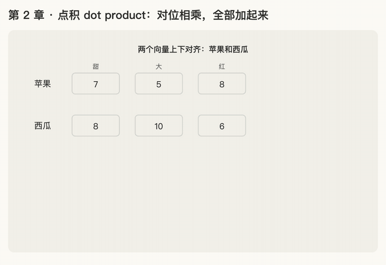

第 2 章 · 点积 dot product
本地运行
git clone https://github.com/wikieden/transformer-visual
cd transformer-visual/code/notebooks
pip install jupyterlab torch numpy
jupyter lab ch02_dot_product.ipynb也可以下载后直接用 VS Code 打开 .ipynb 运行。需要 GPU 的章节在 Colab 里选「代码执行程序 → 更改运行时类型 → GPU」。
本章回答：怎么用数字衡量两个东西有多"像"？
讲解日期：2026-10-25 · 上一章：第 1 章 向量 · 下一章：第 3 章 softmax（上）
本章缩写：softmax = soft（柔和的）+ max（取最大）：按大小分比例，不是只挑最大的；cos = cosine（余弦）；NMT = Neural Machine Translation（神经机器翻译）；CS336 = Stanford 课程 CS 336（Computer Science 336，Language Modeling from Scratch）；代码里的名字（PyTorch、nn.Linear等）见附录"PyTorch 对照"。全部缩写见 附录 · 缩写与术语表
讲解
两步：对位相乘，全部加起来
拿苹果 [7, 5, 8] 和西瓜 [8, 10, 6]：
| 位置 | 苹果 | 西瓜 | 相乘 |
|---|---|---|---|
| 甜 | 7 | 8 | 7 × 8 = 56 |
| 大 | 5 | 10 | 5 × 10 = 50 |
| 红 | 8 | 6 | 8 × 6 = 48 |
| 加起来 | 56 + 50 + 48 = 154 |
苹果 [7, 5, 8] 和柠檬 [1, 3, 0]：7×1 + 5×3 + 8×0 = 22。
154 远大于 22：苹果和西瓜"更像"，因为两者都甜、都偏红，同一个位置上都是大数，乘出来就大。苹果和柠檬一个甜一个酸、一个红一个不红，乘出来就小。
和 attention 的关系
读到"她"时，要给句子里每个词打分，看谁和"她"关系大。这个分数就是用点积算的：拿"她"的向量和每个词的向量各做一次点积，分数高的就多看。
公式
- 中间是展开写法，最右边是简写，两者完全一样。
- \(a_1b_1\) 就是 \(a_1\times b_1\)，数学里乘号常常省略不写。
符号：\(\sum\)（求和）
| 写法 | 读法 | 意思 |
|---|---|---|
| \(\sum_{i=1}^{d}\) | 西格玛，i 从 1 到 d | i 从 1 数到 d，把每一项都加起来 |
看到 \(\sum\) 就想"全部加起来"。
动画演示：对位相乘，全部加起来

可交互版：animations/02-dot-product.html（要能点按钮、拖滑块，需要用本地服务打开，见 animations/README.md"跑起来看"）。
怎么看：
- 苹果和西瓜上下对齐，甜 × 甜、大 × 大、红 × 红，下面的条一段段累加：56 → 106 → 154；
- 换成柠檬：7 + 15 + 0 = 22；
- 154 对 22：同一位置上都是大数，乘出来就大，所以更像；
- 滑块：让柠檬变甜，和苹果的点积跟着变大。
练习与作答记录
题：算香蕉 [8, 3, 0] 和柠檬 [1, 3, 0] 的点积。
作答：8×1 + 3×3 + 0×0 = 8 + 9 = 17。✓
点评：同位置相乘、再全部加起来，步骤完全正确。
口诀
对位相乘再相加，数字越大越像它。
本章复习卡片
R02 点积怎么算 · R03 符号 \(\sum\) 和下标（见 review.md）
附录 · 延伸阅读
留给以后深入学习用，不影响本章主线。★ 是建议先读的。
- 本地论文的文本版在materials/text/papers/，表里的行号就是指这个文本版。
- CS336 handout 在cs336-spring2025/materials/text/cs336_spring2025_assignment1_basics.txt。
推荐阅读
| 读什么 | 读哪里 | 读它为了什么 |
|---|---|---|
| ★ Attention Is All You Need | §3.2.1，L177–L183 | 论文为什么选点积而不是"加性"打分：一样好，但点积快 |
| ★ 3Blue1Brown《线性代数的本质》 | 第 9 集 Dot products and duality | 点积的几何意义：投影 |
| Bahdanau et al. 2014（attention 的出处） | §3.1，L154–L214 | 最早的 attention 用一个小网络打分（加性 attention），不是点积 |
| Luong et al. 2015, Effective Approaches to Attention-based NMT（arXiv 1508.04025） | 讲打分函数的那一节（dot / general / concat） | 三种打分方式并排比较 |
| Goodfellow《Deep Learning》 | §2.2 矩阵和向量相乘、§2.5 范数 | 点积和长度的正式定义 |
数学原理
- 几何意义：点积 = 两个长度相乘，再乘上夹角的余弦。方向越一致，余弦越接近 1，点积越大。这就是"数字越大越像"的来源。
- 余弦相似度：把点积除以两个长度，只看方向、不看长短，结果在 −1 到 1 之间。
- 运算规律：可以交换（a·b = b·a）；可以拆开（(a+b)·c = a·c + b·c）。第 14 章"加上号码牌后分数怎么变"就是靠拆开来分析的。
公式清单
| 公式 | 意思 |
|---|---|
| \(\mathbf a \cdot \mathbf b = \sum_{i=1}^{d} a_i b_i\) | 对位相乘再相加 |
| \(\mathbf a \cdot \mathbf b = \lVert \mathbf a \rVert \lVert \mathbf b \rVert \cos\theta\) | 几何形式，θ 是夹角 |
| \(\cos\theta = \frac{\mathbf a \cdot \mathbf b}{\lVert \mathbf a \rVert \lVert \mathbf b \rVert}\) | 余弦相似度 |
| \((\mathbf a + \mathbf b) \cdot \mathbf c = \mathbf a \cdot \mathbf c + \mathbf b \cdot \mathbf c\) | 点积可以拆开 |
| \(\text{score}(\mathbf q, \mathbf k) = \mathbf v^\top \tanh(W_1 \mathbf q + W_2 \mathbf k)\) | 加性打分（Bahdanau），对照用 |
PyTorch 对照：把本章的数字用代码算一遍
代码在仓库本地
transformer-deep-dive/solutions/chapter-code/ch02_dot_product.py，配套测试tests/test_ch01_04.py（在线版不带代码文件，下面摘了关键几行）。Mac 上直接能跑，不需要 GPU：
bash cd transformer-deep-dive/solutions/chapter-code uv run python ch02_dot_product.py
讲义 ↔ 代码：
| 讲义 | 公式 / 说法 | PyTorch 写法 | 跑出来 |
|---|---|---|---|
| 对位相乘 | \(a_1b_1, a_2b_2, \dots\) | a * b |
[56, 50, 48] |
| 全部加起来 | \(\sum\) | (a * b).sum() |
154 |
| 点积 | \(\mathbf a\cdot\mathbf b\) | torch.dot(a, b) 或 a @ b |
苹果·西瓜 154，苹果·柠檬 22 |
| 和每个水果各比一次 | 3 次点积 | table @ apple |
[138, 154, 22] |
关键几行：
APPLE @ MELON # 点积：154（一个数）
APPLE * MELON # 逐个相乘：[56, 50, 48]（还是一串数）
table @ APPLE # 表的每一行都和苹果做点积：[138, 154, 22]
代码里才看得到的：
*和@不一样：*是逐个相乘，结果还是一串数；@是点积，乘完再加起来，变成一个数。第 20 章的 ⊙（逐个相乘）在代码里就是*。table @ apple一行做 3 次点积：这就是第 11 章"排成矩阵、一次算完"的预告。苹果和自己的点积 138 也顺便算出来了。
自己改一改：
- 先手算西瓜·柠檬，再跑
MELON @ LEMON对一下。